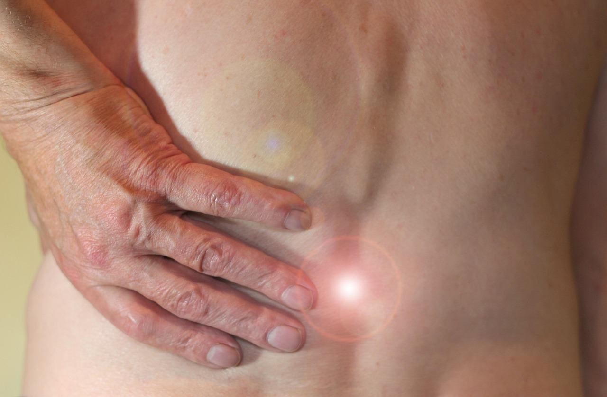
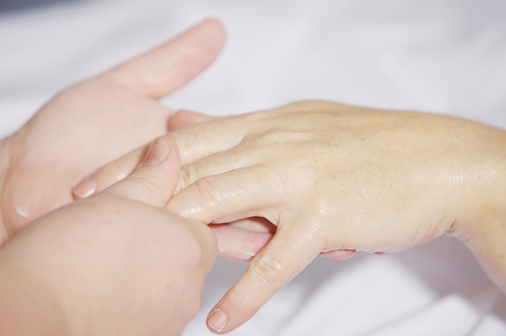

Kinetoterapie
Kinetoterapia este o metodă de tratament care utilizează mișcarea pentru prevenirea și tratamentul afecțiunilor. Programele noastre sunt personalizate în funcție de nevoile fiecărui pacient.
Beneficii:
- Îmbunătățirea mobilității articulare
- Consolidarea musculaturii
- Reducerea durerilor
- Recuperare postoperatoră accelerată
- Îmbunătățirea posturii

Programe disponibile:
Recuperare post-AVC
Program specializat pentru pacienții care au suferit accident vascular cerebral.
12-24 săptămâniRecuperare postoperatoră
Programe adaptate după intervenții chirurgicale ortopedice.
6-12 săptămâniReabilitare coloană vertebrală
Tratament pentru afecțiuni ale coloanei vertebrale (hernii de disc, sciatică etc.).
8-16 săptămâniMasaj Terapeutic
Masajul terapeutic este o metodă eficientă de tratament a durerilor musculare și articulare, precum și de relaxare a sistemului nervos. Tehnicile noastre sunt adaptate nevoilor individuale.
Beneficii:
- Alinarea durerilor musculare și articulare
- Îmbunătățirea circulației sanguine
- Reducerea stresului și anxietății
- Eliminarea toxinelor din organism
- Îmbunătățirea calității somnului

Tipuri de masaj:
Masaj clasic terapeutic
Tehnici de bază adaptate pentru probleme specifice.
60-90 minuteMasaj de relaxare
Pentru reducerea stresului și oboselii.
60-90 minuteMasaj cu ventuze
Tehnică tradițională pentru ameliorarea durerilor.
45-60 minuteTerapii Combinate
Abordări integrate care combină kinetoterapia cu alte metode terapeutice pentru rezultate optime în recuperare. Programele sunt elaborate de echipa noastră multidisciplinară.
Beneficii:
- Rezultate superioare în recuperare
- Abordare holistică a problemelor
- Scurtarea duratei de recuperare
- Prevenirea recidivelor
- Îmbunătățirea calității vieții

Terapii disponibile:
Kinetoterapie + Electroterapie
Combinație între exerciții și stimulare electrică musculară.
10-20 ședințeKinetoterapie + Termoterapie
Exerciții combinate cu aplicații de căldură sau frig.
8-15 ședințeProgram integrat de recuperare
Abordare multidisciplinară pentru cazuri complexe.
12-24 săptămâni